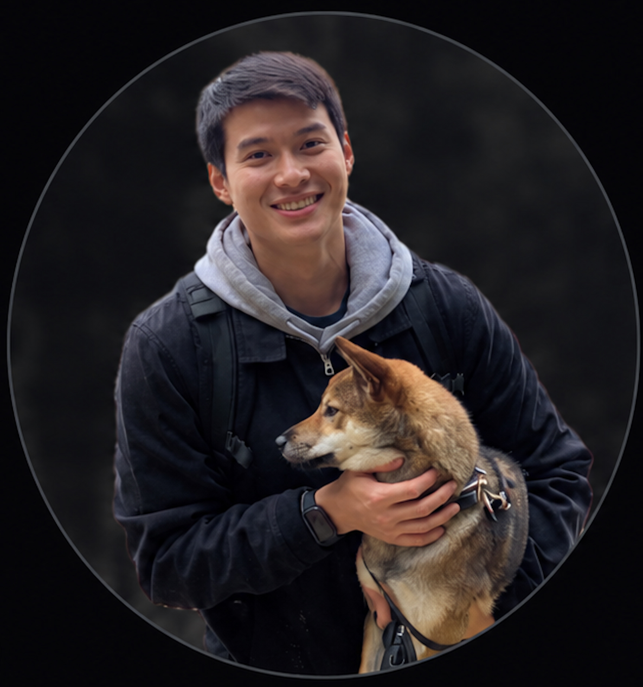

English • Korean • Vietnamese
I review, refine, and improve information so teams can deliver accurate, consistent work.
Accuracy.
Clarity.
Consistency.

I am a bilingual analyst with experience across healthcare, multilingual communication, technical support, and operations. My work combines language accuracy with careful review, documentation, and problem solving. I enjoy work that requires attention to detail, independent investigation, and making information clearer and more consistent. I am particularly interested in proofreading, localization, quality assurance, terminology, and content operations.
UnitedHealthcare · Contract via Robert Half
Aug 2026 – Present · Remote
Identified a system issue causing paid claims to appear unpaid to members. Confirmed the discrepancy by comparing member-facing information with internal systems, then escalated the findings to IT for resolution.
Identified a duplicate complaint-email process between call center agents and an internal team. Recognized the lack of visibility between the two workflows and helped clarify the process to reduce unnecessary duplication.
Created documentation for manually changing providers through legacy systems and regularly supported teammates who needed help interpreting job aids or resolving difficult cases.
I pay close attention to terminology, consistency, context, and small details that can affect the quality of information.
I enjoy investigating issues independently, identifying what is causing a problem, and determining the most practical next step.
I turn complicated processes and recurring questions into clear documentation that others can use.